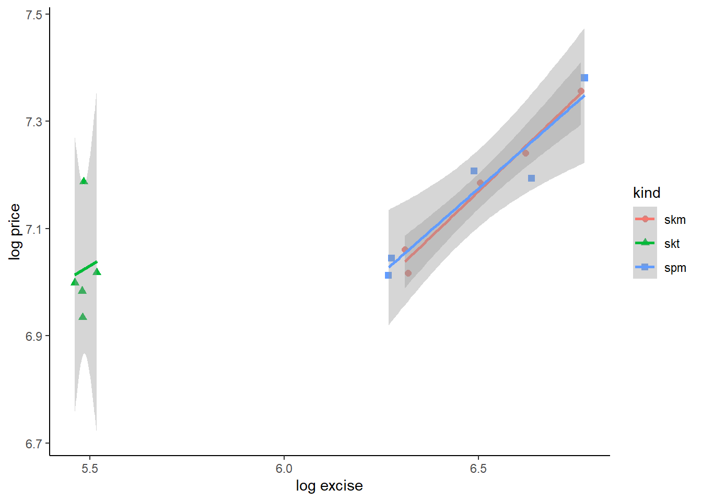

excise report
Abstract
This report presents our analysis on mainly estimating elasticity and forecasting future excise and revenue for DGCE. We find that the elasticity of demand to be vary between -0.5 to -1.1. We also find a strong case for tax-price pass-through for SKM and SPM tobacco type. Our findings corroborates most literature on the Indonesian tobacco use. Unfortunately data limits how much and how robust the analysis can get. In particular, we find very little value of analysis on electric cigarettes, which maindly due to only one year datapoint available for study.
1 Introduction
Nicotine is addictive and harmful. Controlling tobacco use via taxation requires understanding of demand elasticity of the good (Hidayat and Thabrany 2011). Prospera was tasked to help Directorate General of Customs & Excise (DGCE) evaluating the impact of cigarette excise. More specifically, we are to estimate price elasticity of demand for cigarettes and how an increase in excise would matter.
The study become even more important since the introduction of electric cigarettes. It can be argued that e-cigs create a substitute to the cigarettes, and may be an introduction to more traditional tobacco cigarettes (Binns, Lee, and Low 2018). DGCE was starting to collect data (and excise) for e-cigarettes since 2020.
This report plans to find a good forecasting for the next demand for excise ribbon. To do that, we need to answer few questions:
How much is the price elasticity of demand of both traditional cigarettes and electric cigarettes?
How much changes in taxes affects prices? That is, if DGCE wants to reduce tobacco consumptions through taxes, it must know how firms behave in regards to pricing.
How much revenue to be gained from changing the tax rate?
We must also answer this following question: How much is the cross-price substitution between traditional and electric cigarettes?
While all of these questions are extremely important, we find the answer to not be straight-forward. Few literatures actually looking at this. But the main problem is the lack of good quality data in answering those questions, particularly on e-cigarettes.
2 Literatures
We rely on three papers for our desk investigation which is summarized in Table 1.
Hidayat and Thabrany (2011) investigates whether smokers in general are myopic or rational addicts. They utilise 2SLS and GMM along with IFLS data with 1783 total observations to conduct their study. According to this consumer-side study, the price elasticity of demand for traditional tobacco is around -0.38 to -0.57. They also controls for income with total expenditure as the proxy.
Djutaharta et al. (2021) look at the impact of cigarette prices to household nutrient intake. Collecting various household surveys in 2014, they are able to observe a cross-section 285,400 households. They use unit value as the price which is sourced from PODES, one of the household survey. While their goal is not to look at elasticity, they find that 1% increase in cigarette prices lead to an increase of budget share for cigarettes by 0.0737 percentage point.
Prasetyo and Adrison (2020) utilise transactional data on the firm level, 2005-2017, with total 32,711 observations (around 2,500 firms per year). They get the data from DGCE. They look at the tax-price pass through, which is the impact of changes in tax to the firms’ pricing strategy. They also examine the pass-through effect on three types of traditional cigarettes, namely SKT, SKM and SPM. They find that an increase of 1% of tax rate leads to an increase of prices by around 0.15, 0.36 and 0.77 for SKT, SKM and SPM respectively.
| paper | finding | data | obs year | N |
|---|---|---|---|---|
| Hidayat and Thabrany (2011) | elasticity (-0.38 to -0.57) | IFLS | 1993,1997,2000 | 1783 |
| Djutaharta et al. (2021) | budget share | Susenas, PODES, RISKESDAS | 2014 | 285,400 |
| Prasetyo and Adrison (2020) | tax-price passtrough | firm transactions from DGCE | 2005-2017 | 32,711 |
For objectives, this report bear similarity with Hidayat and Thabrany (2011) the most, albeit it is indeed important to see a tax-price pass-through a la Prasetyo and Adrison (2020). We do have a production data of different types of cigarettes, but our data lack firm level richness as Prasetyo and Adrison (2020)1. Generally we do not look at the question posed by Djutaharta et al. (2021), but This is still an important question to adhere by DGCE. The reason is because using excise as an instrument to reduce smoking may lead to a reduction of a household’s nutrient intake.
Prasetyo and Adrison (2020) offers various insight to the cigarettes market in Indonesia. The industry is highly oligopolistic and often offers low price of cigarettes to avoid paying progressive exicse. This leads to higher number of smokers2. Low potential revenue,thus may be outweighed by the higher cost of treatment of tobacco-related diseases.
On the last note, none of those are looking at electric cigarettes.
3 Data
This paper relies solely on data sourced by DGCE. The data contains information on both traditional and e-cigarettes, albeit on different details. We will first discuss about the traditional cigarettes and then proceed to e-cigarettes.
3.1 Traditional cigarette data
The traditional cigarettes dataset contains information on annual production (in unit) and excise revenue for three kinds of traditional cigarettes, SKM, SKT and SPM. It also contain two types of regulated price data, HTP (retail price) and HJE (base price to calculate the excise liabilities), both quarterly. The data is available from 2018-2022, 2023 data was available for the first and second quarter only.


The Figure 1 shows us some statistics on the data that we have on the traditional cigarettes. SKM and SPM are both machine-made and are associated with big firms, while SKT is handmade, often associated with small firms. SKM is considered Indonesian special and is highly popular among smokers and the largest source of excise revenue (see (fig1-1?) and fig1-3).
(fig1-2?) shows the price of each types which are increasing thanks to regulations. SKM and SPM are more expensive than SKT, partly due to a higher tax rate imposed on the machine-made cigarettes (see (fig1-4?)). This excise structure is design to protect small firms. The tax rate shown in (fig1-4?) corroborates Prasetyo and Adrison (2020) and is considered too low3.
3.2 electronic cigarette data
Data on e-cigarette has a very low observation, which presents problems with its use in an analysis, at least for the time being. While the production data consists of monthly production and revenue from 2020-2022, the regulated prices (HJE and HTP) are only available for June 2022 and June 2023. This means any analysis involving price can only be conducted for 1 year of observation which is not enough for any econometric technique.
e-cigarette data also have various other quirks. Firstly, unlike traditional cigarettes which are all measured in “batang”, e-cigs’ measurement varies. For example, an EET-batang is measured by batang, EET-cair in mililitre, EET-cartridge in cart (2020) and pods (2021), and REL-padat in grams. Worse, some types discontinued in 2022 and replaced with entireley new types (see Table 2).
| Types | measure | year |
|---|---|---|
| EET-batang | batang | 2020-2021 |
| EET-cair | ml | 2020-2021 |
| EET-cartridge | cart/pods | 2020-2021 |
| REL-padat | gr | 2022 |
| REL cair terbuka | ml | 2022 |
| REL cair tertutup | ml | 2022 |
The different measurement renders it hard to compare between types of electric cigarettes, and betweenn electric cigarettes and its traditional counterparts. DGCE must find a way to make a measure of “batang equivalent” of e-cigs so one can compare its elasticity with traditional cigarettes. Inconsistency of types between years also don’t help with the analysis.


Figure 2 shows us production quantity and total excise revenue. It is unclear if the aggregation of production can be justified, but since it actually measures how many excise ribbon produced, it may still be consistent. Still, we would need to know how much ml of REL equivalent to 1 batang of traditional cigarettes to really know how much one can substitute one with the other.
4 Method
Here we describe our method in getting elasticities, tax-price pass-through and marginal revenue per marginal tax increase, given the data limitation.
Let a standard elasticity parameters
Q_i=AP_i^{-\varepsilon}
which can be approximately log-linearized
q_i=a-\varepsilon p_i
where a lowercase is the log version of its uppercase counterparts. We can, thus, econometrically estimated the above equation with a regression. Additionally, we follow the theory in having an income elasticity with GDP per capita as a proxy. We then estimate:
q_{i}=a-\varepsilon p_{i} + \gamma y_{i} + \epsilon_{i}
We assume an iid \epsilon_{it} for now and uses own-price elasticity since we lack information on the price of electric cigs. The parameter \varepsilon is the own-price elasticity of demand, which we expect to be negative, while \gamma is the income elasticity of demand which is assumed to be positive.
We have index i \in {\text{traditional},\text{SKM},\text{SKT},\text{SPM}}. That is, we will regress on the level of each type of traditional cigarettes. But we will also regress on aggregate. That is, we regress total demand of traditional cigarettes Q_{traditional}=\sum_i Q_i against a weighted average prices:
P_{traditional}=\frac{\sum_i P_i Qi}{\sum_i Q_i} \ \ for \ i \in \{SKM,SPM,SKT\}
5 Results
We use data that are made available by DGCE for us. Data contains production, revenue, base price (HJE) for tax purposes and retail price (HTE) for consumers for various types of traditional and electric cigarettes. Unfortunately, the availability of those data differs quite tremendously. Some are collected monthly, some others are quarterly and annually. Common denominator suggests us to conduct the analysis annually.
5.1 Elasticities: traditional cigarettes
First, we plot a cross-section of our X and Y variable, which can be seen in Figure 3.
As we can see from the Figure 3, SKT has the lowest price level compared to the other two. Quantity-wise, SPM is the lowest. SKM and SPM may have the same gradient, but SKT is definitely the other way around. Regressing them together may gives us a bias results, so it may be best to regress the 3 types separately. We also know from Prasetyo and Adrison (2020) that at least the tax-price pass-through of the 3 types are all different.
We show the regression results in Table 3.
| Traditional | SKM | SKT | SPM |
|---|---|---|---|---|
(Intercept) | 25.750** | 6.592+ | -9.257 | 4.212 |
(1.571) | (2.048) | (6.921) | (3.185) | |
own-price | -0.479 | -0.782+ | 0.873 | -1.216* |
(0.212) | (0.202) | (1.497) | (0.274) | |
y | 0.525 | 0.578 | 0.879 | 0.900 |
(0.311) | (0.369) | (1.403) | (0.546) | |
Num.Obs. | 5 | 5 | 5 | 5 |
R2 | 0.722 | 0.917 | 0.663 | 0.935 |
R2 Adj. | 0.444 | 0.835 | 0.326 | 0.870 |
AIC | -17.4 | -15.3 | -2.1 | -10.9 |
BIC | -18.9 | -16.9 | -3.6 | -12.5 |
Log.Lik. | 12.692 | 11.657 | 5.039 | 9.473 |
F | 2.597 | 11.089 | 1.967 | 14.360 |
RMSE | 0.02 | 0.02 | 0.09 | 0.04 |
+ p < 0.1, * p < 0.05, ** p < 0.01, *** p < 0.001 | ||||
The elasticity of the traditional cigarettes is -0.4791002 which is the decrease in sales if prices go up by 1%. Meanwhile, 0.5248967is the income-effect, that is, how much more sales go up if GDP per capita rises by 1%.
However, to preserve degree of freedom, we can estimate all kinds in one regression, albeit using dummy variables for different kinds of traditional cigarettes. This technique will force all non-dummy variables to be assumed paralel. That is, we will force the three kinds of cigarettes to have the same elasticity.
| (1) |
|---|---|
(Intercept) | 2.283 |
(3.416) | |
own-price | -1.099* |
(0.367) | |
y | 1.383* |
(0.606) | |
kindskt | -1.500*** |
(0.153) | |
kindspm | -2.985*** |
(0.073) | |
Num.Obs. | 15 |
R2 | 0.994 |
R2 Adj. | 0.992 |
AIC | -16.4 |
BIC | -12.2 |
Log.Lik. | 14.207 |
F | 431.007 |
RMSE | 0.09 |
+ p < 0.1, * p < 0.05, ** p < 0.01, *** p < 0.001 | |
As we can see, this approach improves degree of freedom and provides a more robust standard error. The elasticity of the traditional cigarettes is -1.0994769 which is the decrease in sales if prices go up by 1%. Meanwhile, 1.3828417is the income-effect, that is, how much more sales go up if GDP per capita rises by 1%. However, judging from Figure 3, this estimation may be bias, especially since one of the type has a visual positive relationship.
Now that we have various estimators, it may takes a bit of a guesswork here. We can use an aggregated estimators, or the pooled-dummy estimators. Our options are:
| parameter | aggregate value | pooled-dummy value |
|---|---|---|
| price-effect | -0.4791002 | -1.0994769 |
| income-effect | 0.5248967 | 1.3828417 |
We can then propose an elasticity equation as such:
Q_{trad}=\frac{Y^{0.52}}{P_{trad}^{0.48}}\cdot e^{25.75}
or such:
Q_{trad}=\frac{Y^{1.38}}{P_{trad}^{1.10}}\cdot e^{2.28}
The first equation is actually make sense. The inelasticity of cigarette demands is quite well-known. Additionally, since the parameters are not statistically different from 0, it’s even more inelastic. Moreover -0.52 corroborates with elasticity estimated by Hidayat and Thabrany (2011) from the consumer side.
The second equation gives us a better statistical power thanks to a larger observation. However, Figure 3 and individual estimation Table 3 may suggest a possibility of bias. Additionally, an elasticity larger than 1 suggests a relatively elastic goods, which may not the mainstream characteristics of a cigarettes.
In short, the results may be inconclusive, but the technique can be used by DGCE in the presence of better availability of data.
5.2 Tax-price pass through
In the terms of excise, DGCE is interested in knowing how much their additional excise matters for the change in prices, which in turn matter in the change in quantities. We estimate how much prices changes when excise changes with the following specification:
\ln P_t = \alpha+\beta \ln T_t + \varepsilon_{t}
The result of that regression is as follows:
| Traditional | SKM | SKT | SPM |
|---|---|---|---|---|
(Intercept) | 1.940* | 2.399** | 4.299 | 2.651* |
(0.493) | (0.257) | (12.330) | (0.483) | |
own-excise | 0.879** | 0.798*** | 0.532 | 0.759** |
(0.078) | (0.039) | (2.248) | (0.074) | |
Num.Obs. | 5 | 5 | 5 | 5 |
R2 | 0.977 | 0.993 | 0.018 | 0.972 |
R2 Adj. | 0.969 | 0.990 | -0.309 | 0.963 |
AIC | -20.5 | -24.1 | -6.2 | -16.5 |
BIC | -21.7 | -25.2 | -7.4 | -17.7 |
Log.Lik. | 13.267 | 15.031 | 6.118 | 11.246 |
F | 127.688 | 407.922 | 0.056 | 104.179 |
RMSE | 0.02 | 0.01 | 0.07 | 0.03 |
+ p < 0.1, * p < 0.05, ** p < 0.01, *** p < 0.001 | ||||
This estimation result tells us a very strong impact of taxation on prices. That is, for each 1% increase in excise, it passes 0.8792325 % to the consumer via increased price. This estimation is arguable higher than Prasetyo and Adrison (2020) which conducted a firm-level estimation.
However, if we look at individual kinds, We find that the estimation for SPM corroborates Prasetyo and Adrison (2020) findings but the SKM is twice as much in our result compared to their estimation. THey find SKT to be lowest, around 0.153, but we find no difference from zero on SKT, which may suggests close similarity.
As with the elaticity, we can improve the statistical power by pooling the three types with a quite restrictive assumption of a parralel marginal effect.

Again, we find that SKT is different and perhaps needed to be read very carefully.
| (1) |
|---|---|
(Intercept) | -0.463 |
(1.234) | |
own-excise | 0.622*** |
(0.091) | |
y | 0.480* |
(0.183) | |
kindskt | 0.267* |
(0.097) | |
kindspm | 0.002 |
(0.026) | |
Num.Obs. | 15 |
R2 | 0.974 |
R2 Adj. | 0.964 |
AIC | -46.8 |
BIC | -42.5 |
Log.Lik. | 29.380 |
F | 94.809 |
RMSE | 0.03 |
+ p < 0.1, * p < 0.05, ** p < 0.01, *** p < 0.001 | |
This estimation result tells us a very strong impact of taxation on prices. That is, for each 1% increase in excise, it passes 0.6219979 % to the consumer via increased price. But SKT may bias this parameter, as can be suggested by Figure 4.
5.3 Revenue from price and from tax rate
Lastly, we try to look at the impact of changing tax rate to increased revenue. Individual and aggregate estimation is shown in tbl-7.
| Traditional | SKM | SKT | SPM |
|---|---|---|---|---|
(Intercept) | -2.543 | -2.072 | -45.522+ | -6.682* |
(1.602) | (1.946) | (11.411) | (1.234) | |
own-excise | 0.592+ | 0.375 | 5.914+ | 0.002 |
(0.168) | (0.135) | (1.781) | (0.073) | |
y | 0.483 | 0.565 | 1.923* | 1.049* |
(0.278) | (0.309) | (0.425) | (0.189) | |
Num.Obs. | 5 | 5 | 5 | 5 |
R2 | 0.972 | 0.964 | 0.924 | 0.977 |
R2 Adj. | 0.944 | 0.927 | 0.848 | 0.954 |
AIC | -17.9 | -16.9 | -9.1 | -21.7 |
BIC | -19.5 | -18.5 | -10.7 | -23.3 |
Log.Lik. | 12.953 | 12.447 | 8.572 | 14.870 |
F | 34.587 | 26.577 | 12.186 | 42.580 |
RMSE | 0.02 | 0.02 | 0.04 | 0.01 |
+ p < 0.1, * p < 0.05, ** p < 0.01, *** p < 0.001 | ||||
On aggregate, increasing advalorem equivalent of excise rate is associated with 0.6% increase in revenue at 10% level. Since the majority of tax revenue is contributed by SKM, we may expect the individual SKM estimation to be positive and significant, but it is not the case.
This weak association of increased tax revenue is actually corroborates Prasetyo and Adrison (2020) which suggests firms to strategically lower their price to minimize their tax rate. Indeed, our data suggests a continous reduction of HJE:HTP, which suggests the firm to lower their retail prices.
We also can use the appended individual data as our previous two estimation to improve our observation and strengthen statistical power. Results are in Table 8 and again, Figure 5 suggests a different behavior of SKT.
| (1) |
|---|---|
(Intercept) | 15.632*** |
(2.533) | |
own-excise | 0.079 |
(0.188) | |
y | 1.157* |
(0.375) | |
kindskt | -2.035*** |
(0.199) | |
kindspm | -2.990*** |
(0.054) | |
Num.Obs. | 15 |
R2 | 0.997 |
R2 Adj. | 0.996 |
AIC | -25.2 |
BIC | -20.9 |
Log.Lik. | 18.591 |
F | 807.620 |
RMSE | 0.07 |
+ p < 0.1, * p < 0.05, ** p < 0.01, *** p < 0.001 | |
5.4 Electric
Unfortunately, analyzing electric cigarettes is heavily constrained by the data. Since 2022 is the only year with a complete observation of production, revenue and prices, we cannot use econometric methods. We can, however, construct a direct derivation of elasticity from a simple algebra.
Assume a demand function as follows:
Q_{el}=AP_{el}^{\nu}
We can derive the elasticity \nu by first doing a log-lineraization
\ln Q_{el} = \nu \ln P_{el}+\ln A
While this structure allows for an estimation of \nu and A as the intercept, parameterizing both are impossible unless we have more than 1 data point at the very least4.
One of a way to estimate \nu is to use A from the traditional cigarettes estimation. We use the aggregated traditional cigarettes (since this is also aggregated) which is A=25.75
which gives us:
\ln Q_{el} = \nu \ln P_{el}+ 25.75
In this form, it is trivial to get
\nu= \frac{\ln Q_{el}-25.75}{\ln P_{el}}
We then input the data for \ln Q_{el} and \ln P_{el} which will gives us the parameter \nu=-0.54.
6 Forcasting excise
We return to our 4 questions as described in the Section 1. Of course, these anwers comes with huge caveat, that our analysis is extremely limited by the data availability. So please be very careful in using this results.
We have two possible parameters:
Q_{trad}=\frac{Y^{0.52}}{P_{trad}^{0.48}}\cdot e^{25.75}
or:
Q_{trad}=\frac{Y^{1.38}}{P_{trad}^{1.10}}\cdot e^{2.28}
The method to forecast the next year’s excise is pretty much the same. DGCE can play around with the parameters, which one they deemed more appropriate, or just apply both and see which one makes more sense.
DGCE can try to play around with Y and P to make an estimation. That is, Y is the predicted GDP per capita, and P is the predicted price of cigarettes. DGCE can use any P that they find plausible, but P itself can be calculated using the passtrhough equation:
P=T^{0.88} \cdot e^{1.94}
which parameters derived from the traditional estimation in Table 5. This equation tells us how much the tobacco companies will assign their price given the tax rate T, which is under DGCE control. This P then can be used to calculate Q.
After Q is acquired, DGCE can estimate their revenue R to simply multiply Q with T:
R=Q \times T
7 Limitation & Suggestions
The main limitation is data. With the lack of annual data, we are limited to how much degree of freedom we can utilise. That is, we are limited to how much variable we can use in a single regression. Among the limitations are:
traditional cigarettes:
quarterly HTP:HJE data is useful.
production and revenue data is annual. Common denominator principle suggests we can only use annual data.
Data is limited to 2018-2022 for a full year of observation.
electronic cigarettes:
excellent monthly production and revenue data. However, monthly data often prone to seasonality and cyclicality.
HJE and HTP are only available for June 2022 and June 2023.
Names of cigs are different between different years.
consequence is more severe: only 2022 observation can be used.
These limitations prevents us from answering the cross-price elasticity between e-cigarettes and traditional cigarettes.
Going forward, here are our recomendations regarding data for the DGCE:
have a robust datasets which can easily be extracted into familiar form (i.e., machine readable).
Keep collecting monthly data even though some HTP and HJE (or other regulations) do not change.
For further analysis, we can recommend the use of other datasets, such as Susenas or other household surveys. Unfortunately, there is no going around the lack of data. Even if we can utilise other data, we will still need HTP:HJE and annual revenue from the DGCE.
Better yet, if we can have access to the same quality of data as Prasetyo and Adrison (2020) from DGCE, we will surely able to output a much more robust analysis.
References
Binns, Colin, Mi Kyung Lee, and Wah Yun Low. 2018. “Children and e-Cigarettes: A New Threat to Health.” Asia Pacific Journal of Public Health 30 (4): 315–20. https://doi.org/10.1177/1010539518783808.
Djutaharta, Triasih, Nachrowi D. Nachrowi, Aris Ananta, and Drajat Martianto. 2021. “Impact of Price and Non-Price Policies on Household Cigarette Consumption and Nutrient Intake in Smoking-Tolerant Indonesia.” BMJ Open 11 (1): e039211–11.
Hidayat, Budi, and Hasbullah Thabrany. 2011. “Are Smokers Rational Addicts? Empirical Evidence from the Indonesian Family Life Survey.” Journal Article. Harm Reduction Journal 8: 6. https://doi.org/https://doi.org/10.1186/1477-7517-8-6.
Prasetyo, Bagus Wahyu, and Vid Adrison. 2020. “Cigarette Prices in a Complex Cigarette Tax System: Empirical Evidence from Indonesia.” Tobacco Control 29 (6): 618–23. https://doi.org/10.1136/tobaccocontrol-2018-054872.
Footnotes
interestingly, they also sourced the data from DGCE.↩︎
adult male smokers increase in share from 60.6% in 2000 to 76.1%↩︎
WHO suggests any tax rate below 70% is deemed too small to reduce smoking (Prasetyo and Adrison 2020)↩︎
Obviously the more data point the better. While 2 data points are enough for parameterisation, it is not ideal.↩︎